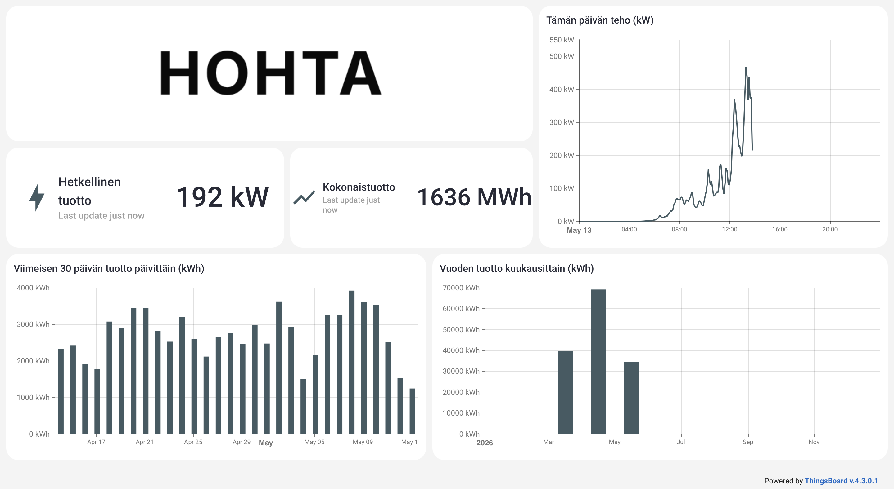
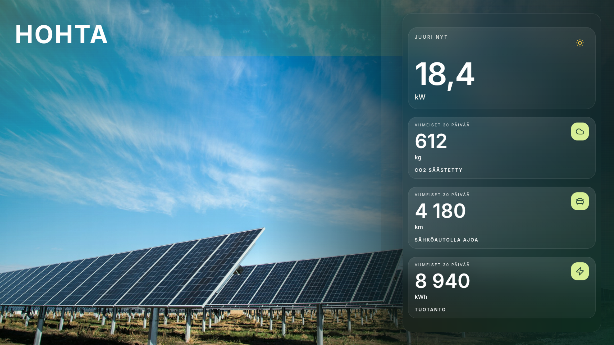

Pikku • Perus • Laajennettu • Räätälöity
1. Hohta-palvelun perusajatus
Hohta on suomalainen palvelu, jonka avulla aurinkopaneelien tuotantodata saadaan helposti näkyviin esimerkiksi aulan infonäytölle. Palvelinympäristömme sijaitsee Suomessa, ja ratkaisu voidaan toteuttaa ilman kytkeytymistä asiakkaan sisäverkkoon. Tämä helpottaa käyttöönottoa erityisesti kohteissa, joissa yritysverkon tietoturvavaatimukset ovat tiukat.
Täysin paikallisesta verkosta riippumaton yhteys onnistuu silloin, kun aurinkoinverttereihin ei ole kytketty muita monitorointi- tai ohjauslaitteita, jotka ovat jo paikallisessa verkossa.
2. Pakettien roolit lyhyesti
| Paketti | Rooli | Tyypillinen käyttötarve |
|---|---|---|
| Pikku | Kevyt kertamaksullinen infonäyttöpaketti ilman tallennettua historiadataa. | Asiakas haluaa näyttää hetkellisen tuotantotehon ja kokonaistuoton selkeästi infonäytöllä. |
| Perus | Kevyt infonäyttö- ja perusseurantapaketti pieniin kohteisiin. | Asiakas haluaa näyttää aurinkotuotannon selkeästi infonäytöllä ja tarkastella perustietoja portaalissa. |
| Laajennettu | Laajempi monitorointipaketti, jossa on vaihtoehto elegantille näkymälle, hälytykset ja pidempi historia. | Asiakkaalla on isompi kohde tai tarve seurata tuotantoa tarkemmin kuin pelkällä infonäytöllä. |
| Räätälöity | Asiakaskohtaisesti räätälöitävä paketti tarpeisiin, joita vakiopaketit eivät kata. | Asiakas haluaa valita yksityiskohtaisesti tarvitsemansa palvelut, tarvitsee räätälöityjä ominaisuuksia, tai on tilaamassa useampaan kohteeseen. |
3. Vakionäkymä
Vakionäkymä on Hohta-palvelun vakiomallinen julkinen infonäyttönäkymä Perus-, Laajennettu- ja Räätälöity-paketteihin. Se on suunniteltu esimerkiksi aula-, käytävä-, oppilaitos- tai asiakastilan näytölle, jossa aurinkosähköjärjestelmän tuotanto halutaan esittää selkeästi.
Näkymään kuuluu:
- järjestelmän kokonaistuotto
- kaavio tämän päivän sähköntuotosta
- hetkellinen teho
- viimeisen 30 päivän tuotetut energiamäärät pylväskaaviona
- Hohtan logo ja teema
Pikku-paketin kevyt infonäyttö sisältää vain hetkellisen tuotantotehon ja kokonaistuoton. Pikku-paketissa ei tallenneta eikä näytetä historiadataa.
Kaikki infonäyttönäkymät tuotetaan asiakkaalle nettisivumuodossa. Asiakas voi avata tarjoamamme linkin nettisivulle ja siten nähdä aurinkotuotannon infonäytöllä. Edellytyksenä toimivuudelle on, että infonäytöllä on internet-yhteys. Infonäytöllä ei tarvitse olla sisäverkon kautta yhteyttä aurinkoinverttereihin.


Elegantti näkymä
Elegantti näkymä on visuaalisempi infonäyttönäkymä kohteisiin, joissa aurinkotuotanto halutaan esittää viestinnällisemmin esimerkiksi aulassa, asiakastilassa tai vastuullisuusviestinnän yhteydessä. Näkymä korostaa aurinkotuotannon vaikutusta selkeällä ja rauhallisella tavalla, ja se voidaan valita Laajennettu-paketissa vakionäkymän sijaan.
Räätälöity-paketissa eleganttia näkymää voidaan käyttää muokkausten pohjana. Muokkaukset voivat koskea esimerkiksi logoa, väriteemaa, taustakuvaa, fontteja ja näytettävän informaation valintaa.


4. Pakettikohtaiset kuvaukset
Pakettihinnan lisäksi veloitetaan 500 € laitekulu. Kohteen mahdollisesti tarvitsemat lisälaitteet veloitetaan tämän lisäksi.
Pikku
Kertamaksullinen kevyt infonäyttöpaketti ilman tallennettua historiadataa.
Hinta: 1500 € kertamaksu.
Kenelle: Pikku sopii pieniin kohteisiin, joissa halutaan näyttää aurinkotuotanto julkisella infonäytöllä mahdollisimman yksinkertaisesti ilman tallennettua historiadataa, kirjautumisportaalin historiatietoja, invertterikohtaista monitorointia tai hälytyksiä.
Keskeinen sisältö:
- enintään 150 kWp, enintään 2 invertteriä, 1 tiedonkeruulaite ja 1 käyttäjä
- julkinen kevyt infonäyttö tuotannon esittämiseen
- näytöllä hetkellinen tuotantoteho ja järjestelmän kokonaistuotto
- Hohtan logo ja -teema
- ei tallennettua historiadataa, 0 kk
- best effort -periaatteella annettava kevyt tuki
Rajaukset:
- ei sisällä historiadataa, historiagraafeja tai 30 päivän tuotantokaaviota
- ei sisällä sähköpostihälytyksiä
- ei sisällä invertterikohtaista monitorointia
- ei sisällä erillisiä raportteja, datavientejä, rajapintoja tai massalatauksia
- ei sisällä asiakaskohtaisia dashboard-muutoksia
- ei sisällä paikan päällä tehtäviä tuki-, tarkastus- tai huoltotoimia, ellei niistä sovita erikseen
Perus
Kevyt infonäyttö- ja perusseurantapaketti pieniin kohteisiin.
Kenelle: Perus sopii pieniin kohteisiin, joissa halutaan näyttää aurinkotuotanto julkisella infonäytöllä ja tarkastella perustietoja kirjautumisportaalissa ilman invertterikohtaista monitorointia tai hälytyksiä.
Keskeinen sisältö:
- enintään 150 kWp, enintään 2 invertteriä, 1 tiedonkeruulaite ja 1 käyttäjä
- julkinen vakionäyttö tuotannon esittämiseen
- Hohtan logo ja -teema
- 12 kuukauden historiadata kirjautumisportaalissa
- best effort -periaatteella annettava kevyt tuki
Rajaukset:
- ei sisällä sähköpostihälytyksiä
- ei sisällä invertterikohtaista monitorointia
- ei sisällä erillisiä raportteja, datavientejä, rajapintoja tai massalatauksia
- ei sisällä asiakaskohtaisia dashboard-muutoksia
- ei sisällä paikan päällä tehtäviä tuki-, tarkastus- tai huoltotoimia, ellei niistä sovita erikseen
Laajennettu
Laajempi monitorointipaketti isompiin kohteisiin ja tarkempaan seurantaan.
Kenelle: Laajennettu sopii kohteisiin, joissa aurinkotuotantoa halutaan seurata julkisen infonäytön lisäksi yksityisemmin ja tarkemmin. Paketti soveltuu erityisesti kohteisiin, joissa on useita inverttereitä tai joissa halutaan saada sähköpostihälytyksiä vikatiloista ja tiedonkeruun katkoksista.
Keskeinen sisältö:
- enintään 250 kWp, enintään 15 invertteriä, 1 tiedonkeruulaite ja enintään 3 käyttäjää
- kaikki Perus-pakettiin kuuluvat ominaisuudet
- invertterikohtaiset graafit kirjautumisportaalissa
- 24 kuukauden historiadata
- sähköpostihälytykset palvelun havaitsemista invertterin vikatiloista tai virhekoodeista
- sähköpostihälytykset palvelun havaitsemista tiedonkeruun katkoksista
- vaihtoehto elegantille näkymälle tai vakionäytölle infonäytössä
- kohtuullinen etätuki Hohtan tavanomaisina työaikoina siltä osin kuin asia koskee Hohtan vastuulla olevaa palvelua
Rajaukset:
- ei sisällä sitovia vaste- tai korjausaikoja, ellei niistä sovita erikseen
- ei sisällä paikan päällä tehtäviä toimenpiteitä, ellei niistä sovita erikseen
- ei sisällä asiakaskohtaisia raportteja, integraatioita tai white label -toteutuksia ilman erillistä sopimusta
Historiadata tarkoittaa palvelussa näytettävää ja palvelun toimintaan käytettävää tuotantodataa. Erillinen dataote, raportointi tai analyysi voidaan toteuttaa erikseen veloitettavana työnä, mikäli se on teknisesti mahdollista.
Räätälöity
Asiakaskohtaisesti räätälöitävä paketti, johon saatte juuri mitä tarvitsette.
Kenelle: Räätälöity sopii asiakkaille, jotka haluavat juuri heidän tarpeisiinsa räätälöidyn kokemuksen. Tarjolla on vakio-ominaisuuksien lisäksi mittatilaustyönä tehtäviä ominaisuuksia. Räätälöity sopii myös hyvin asiakkaille, jotka haluavat tilata palvelun kerralla useampaan kohteeseen.
Keskeinen sisältö:
- ei kokorajoituksia
- voit halutessasi muokata vakio- tai eleganttia näkymää tarpeidenne mukaan. Tähän kuuluu mm. logo, väriteema, taustakuva, esitettävä informaatio tai täysin puhtaalta pöydältä tehty näkymä juuri teidän tarpeisiinne
- ominaisuuksien laajuus asiakkaan tarpeiden mukaan
- valittava määrä käyttäjiä
- asiakaskohtaiset raportit, dataotteet tai lisäpalvelut
- mahdolliset integraatiot, erityistuki, huoltosopimus, laajennettu tuki tai palvelutasolupaukset erikseen sovittuna
Rajaukset:
- Räätälöity ei laajenna Hohtan vastuita tai velvoitteita automaattisesti, vaan ainoastaan siltä osin kuin asiasta on kirjallisesti sovittu
- hinta, sopimuskausi, palvelutasot, raportointi, kenttäpalvelut ja muut erityisehdot määritellään aina tapauskohtaisesti
Alla on lista kyseisen asiakkaan pyytämistä muokkauksista:
- asiakkaan logo
- asiakkaan brändivärit
- alas jätetty tilaa asiakkaan näytössä olevalle uutispalkille
Tämä on vain suuntaa-antava esimerkki. Kustomoinnin voi myös suorittaa eleganttiin näkymään, ja kustomointiin voi kuulua mm. logot, värimaailma, taustakuva, fontit, näytettävän informaation valitseminen tai kokonaan uuden näkymän rakentaminen puhtaalta pöydältä.
5. Ominaisuudet yhteenvetona
| Ominaisuus | Pikku | Perus | Laajennettu | Räätälöity |
|---|---|---|---|---|
| Julkinen kevyt infonäyttö | Kyllä | Kyllä | Kyllä | Sovittavissa |
| Julkinen perusdashboard | Ei | Kyllä | Kyllä | Kyllä, kustomoitavissa |
| Hohtan oletusbrändäys | Kyllä | Kyllä | Kyllä | Sovittavissa |
| Kirjautumisportaali | Ei | Perusnäkymä | Laajempi monitorointi | Sovittavissa |
| Historiadata | 0 kk | 12 kk | 24 kk | Sovittavissa |
| Invertterikohtaiset graafit | Ei | Ei | Kyllä | Sovittavissa |
| Sähköpostihälytykset vikatiloista ja virhekoodeista | Ei | Ei | Kyllä | Sovittavissa |
| Sähköpostihälytykset tiedonkeruun katkoksista | Ei | Ei | Kyllä | Sovittavissa |
| Elegantti näkymä | Ei | Ei | Kyllä | Sovittavissa |
| Kustomoitu näkymä | Ei | Ei | Ei | Sovittavissa |
| Raportit ja lisäpalvelut | Ei | Ei | Erillistyönä | Sovittavissa |
| Sitovat vasteajat tai SLA | Ei | Ei | Ei | Sovittavissa |
| Paikan päällä tehtävät toimet | Erillisveloitus | Erillisveloitus | Erillisveloitus | Sovittavissa |
6. Termien selitykset
- Historiadata
- Palveluun tallennettava tuotanto- ja seurantadata, jota voidaan näyttää portaalissa palvelupaketin mukaisessa laajuudessa. Erillinen vienti, dataote tai raportti ei sisälly pakettiin, ellei siitä sovita erikseen.
- Yksityinen monitorointi
- Kirjautumisportaalissa näkyvä asiakkaalle tarkoitettu näkymä, jossa voidaan tarkastella esimerkiksi invertterikohtaisia graafeja, historiatietoja ja järjestelmän tilaa.
- Hälytykset
- Sähköpostihälytykset palvelun havaitsemista vikatiloista, virhekoodeista tai tiedonkeruun katkoksista. Hälytykset perustuvat siihen dataan, joka on teknisesti saatavilla kohteen inverttereistä ja tiedonkeruusta.
- Elegantti näkymä
- Havainnollistava näkymä aurinkotuotannon vaikutuksista esimerkiksi viestintä- ja asiakastilakäyttöön.
- Kustomoitu näkymä
- Asiakaskohtaisesti sovittava ulkoasu, jossa infonäyttö tai näkymä voidaan toteuttaa asiakkaan oman logon, värien tai muun brändiohjeistuksen mukaisesti, tai rakentaa asiakkaalle täysin puhtaalta pöydältä.
- Lisäpalvelut
- Esimerkiksi raportit, integraatiot, huoltosopimus, laajennettu tuki, taatut vasteajat tai muu asiakaskohtainen työ, josta sovitaan erikseen.
7. Yleiset rajaukset ja lisätyöt
Ellei tilauslomakkeessa, tarjouksessa tai palvelukuvauksessa ole nimenomaisesti toisin sovittu, palvelupaketteihin eivät sisälly kohdekohtaiset lisätyöt, laajennukset, integraatiot, kenttäkäynnit tai muut toimenpiteet, jotka eivät kuulu valitun palvelupaketin vakiosisältöön.
- laitekulu on 500 €. Kohteen mahdollisesti tarvitsemat lisälaitteet, asennus, sähkötyöt, matkakulut ja käyttöönoton erityistyöt veloitetaan tämän lisäksi hinnaston tai erillisen tarjouksen mukaan
- kohteen sähköjärjestelmän, inverttereiden, sisäverkon ja muiden paikallisten järjestelmien toimivuus on asiakkaan tai kohteen muun toimittajan vastuulla, ellei muuta ole kirjallisesti sovittu
- palvelun tieto on informatiivista ja riippuu muun muassa inverttereistä, tiedonkeruusta, tietoliikenneyhteyksistä ja teknisestä saatavuudesta
- Hohta ei ole asiakkaan aurinkosähköjärjestelmän tai käyttöpaikan tekninen huoltoyhtiö, ellei tästä ole erikseen sovittu